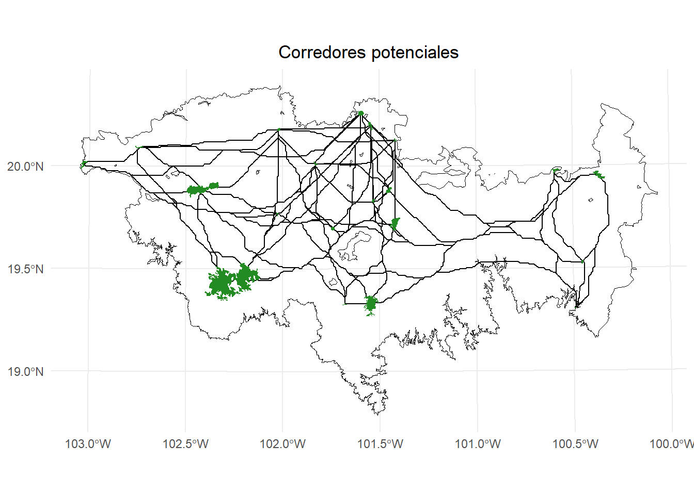
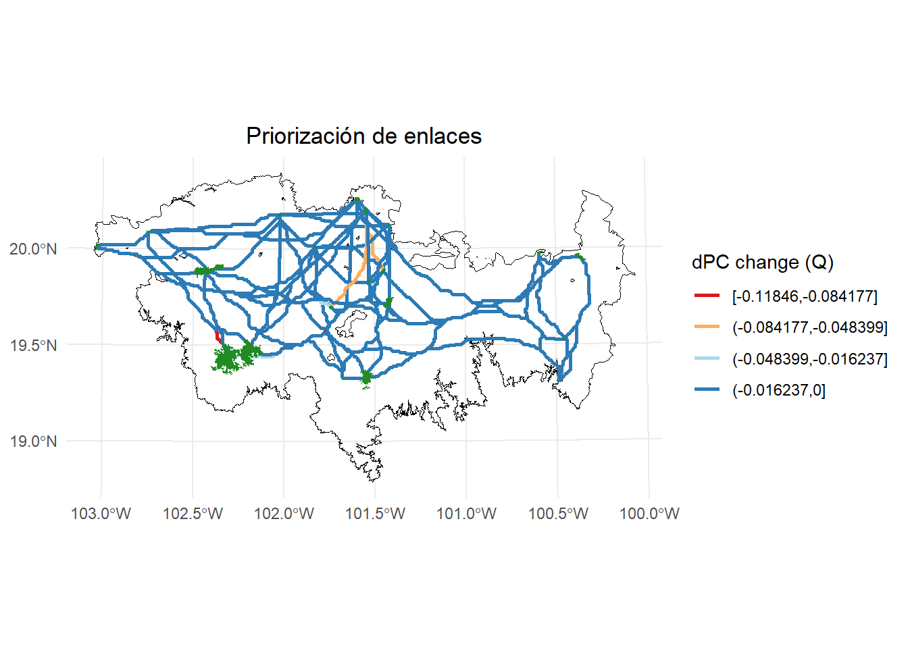

Chapter 7 Prioridad de enlaces con MK_dPCIIC_links()
Esta función calcula el índice dPC o dIIC para estimar la importancia de los enlaces para la conservación y la restauración. Calcula la contribución de cada enlace individual para mantener (modo: eliminación de enlaces) o mejorar (modo: cambio de enlaces) la conectividad general bajo uno o varios umbrales de distancia.
7.1 Rutas de menor costo (corredores potenciales)
Para realizar un ejemplo, estimemos los corredores potenciales entre 20 de nuestros parches utilizando el raster de resistencia que usamos en ejemplos previos.
set.seed(2) #para seleccionar siempre los mismos de forma aleatoria
parches_ejemplo <- habitat_nodes[sample(1:nrow(habitat_nodes), 20),]
parches_ejemplo$Id <- 1:20 #Asignamos un nuevo idlibrary(terra)
data("resistance_matrix", package = "Makurhini")
raster_map <- as(resistance_matrix, "SpatialPixelsDataFrame")
raster_map <- as.data.frame(raster_map)
colnames(raster_map) <- c("value", "x", "y")
ggplot() +
geom_tile(data = raster_map, aes(x = x, y = y, fill = value), alpha = 0.8) +
geom_sf(data = paisaje, aes(color = "Study area"), fill = NA, color = "black") +
geom_sf(data = parches_ejemplo, aes(color = "Habitat nodes"), fill = "forestgreen", linewidth = 0.5) +
scale_fill_gradientn(colors = c("#000004FF", "#1B0C42FF", "#4B0C6BFF", "#781C6DFF",
"#A52C60FF", "#CF4446FF", "#ED6925FF", "#FB9A06FF",
"#F7D03CFF", "#FCFFA4FF"))+
scale_color_manual(name = "", values = "black")+
theme_minimal() +
theme(axis.title.x = element_blank(),
axis.title.y = element_blank())
7.2 Eliminación de enlaces (Link removal)
Si removal = TRUE, la función elimina uno por uno cada uno de los enlaces existentes en la red del paisaje y calcula el impacto de esa pérdida de enlace en la conectividad del paisaje con las métricas dPC o dIIC. Este modo es útil para identificar los enlaces prioritarios que se deben conservar: aquellos con la mayor contribución a la conectividad general del paisaje (valor dPC o dIIC más alto).
En este ejemplo, estimaremos algunas rutas de menor costo entre pares de parches, estas rutas representan corredores potenciales.
library(purrr)
library(gdistance)
#A los valores NA les asignamos un alto valor para evitar que pasen por ahí
resistance_matrix[is.na(resistance_matrix)] <- 1000
#Estimamos la matriz de transición
tr <- transition(resistance_matrix, function(x) 1/mean(x), 8)
#Hacemos una corrección para los movimientos en diagonal
tr <- geoCorrection(tr, type = "c")
#Estimamos el centroide de nuestros parches
centroides <- st_centroid(parches_ejemplo, of_largest_polygon = TRUE)
centroides <- st_coordinates(centroides)
#Loop para estimar corredores entre parches
rutas_list <- list()
counter <- 1
for (i in 1:(nrow(centroides) - 1)) {
#cat(paste0(i, " de ", nrow(centroides), "\r"))
counter <- 1
rutas <- map_dfr((i + 1):nrow(centroides), function(j){
if(counter <= nrow(centroides)){
ruta <- shortestPath(tr, centroides[i,], centroides[j,], output = "SpatialLines")
ruta <- st_as_sf(ruta); st_crs(ruta) <- st_crs(habitat_nodes)
ruta$from <-i ; ruta$to <- j
return(ruta)
}
})
rutas_list[[i]] <- rutas
}
rutas_mc <- do.call(rbind, rutas_list)ggplot() +
geom_sf(data = paisaje, fill = NA, color = "black") +
geom_sf(data = rutas_mc, aes(color = "corredores"), color = "black", linewidth = 0.5) +
geom_sf(data = parches_ejemplo, aes(color = "Habitat nodes"),
fill = "forestgreen", color = NA, linewidth = 0.5) +
theme_minimal() +
labs(
title = "Corredores potenciales"
) +
theme(
plot.title = element_text(hjust = 0.5)
)
Ahora aplicamos la función MK_dPCIIC_links(), pero antes exploremos una nueva variante de estimar el umbral de distancia cuando usamos una resistencia.
Estimaremos la distancia efectiva promedio: media de la resistencia x dispersión De esta forma obtenemos una distancia costo.
#Distancia efectiva promedio como umbral de distancia
Effec_mean <- mean(resistance_matrix[], na.rm = TRUE) * 10000 # 10km
#Aplicamos la función
delta <- MK_dPCIIC_links(nodes = parches_ejemplo,
attribute = NULL,
area_unit = "ha",
distance = list(type = "least-cost",
resistance = resistance_matrix),
removal = TRUE,
metric = "PC",
probability = 0.5,
distance_thresholds = round(Effec_mean),
parallel = NULL,
parallel_mode = 0,
intern = TRUE)
#> Estimating distances. This may take several minutes depending on the number of nodes and raster resolution
#> Estimating PC link index. This may take several minutes depending on the number of nodes
#>
#> Done!
head(delta)
#> Id Source Destination dPC_removal
#> 1 1 2 1 0.0000075
#> 2 2 3 1 0.0000014
#> 3 3 4 1 0.0000002
#> 4 4 5 1 0.0170323
#> 5 5 6 1 0.0000000
#> 6 6 7 1 0.0000053Unir valores con mis corredores de interes:
#Existen otras formas, pero crearé un nuevo ID
delta$ID_nuevo <- paste0(delta$Destination, "_", delta$Source)
rutas_mc$ID_nuevo <- paste0(rutas_mc$from, "_", rutas_mc$to)
#Aplicar merge
rutas_mc <- merge(rutas_mc, delta, by = "ID_nuevo")
rutas_mc
#> Simple feature collection with 190 features and 7 fields
#> Geometry type: LINESTRING
#> Dimension: XY
#> Bounding box: xmin: -107336.4 ymin: 2082987 xmax: 176163.6 ymax: 2187987
#> Projected CRS: NAD_1927_Albers
#> First 10 features:
#> ID_nuevo from to Id Source Destination dPC_removal
#> 1 1_10 1 10 9 10 1 0.0000045
#> 2 1_11 1 11 10 11 1 0.0000467
#> 3 1_12 1 12 11 12 1 0.0042806
#> 4 1_13 1 13 12 13 1 0.0000011
#> 5 1_14 1 14 13 14 1 0.0000199
#> 6 1_15 1 15 14 15 1 0.0025181
#> 7 1_16 1 16 15 16 1 0.0000013
#> 8 1_17 1 17 16 17 1 0.0000000
#> 9 1_18 1 18 17 18 1 0.0000010
#> 10 1_19 1 19 18 19 1 0.0000000
#> geom
#> 1 LINESTRING (-77336.39 21694...
#> 2 LINESTRING (-77336.39 21694...
#> 3 LINESTRING (-77336.39 21694...
#> 4 LINESTRING (-77336.39 21694...
#> 5 LINESTRING (-77336.39 21694...
#> 6 LINESTRING (-77336.39 21694...
#> 7 LINESTRING (-77336.39 21694...
#> 8 LINESTRING (-77336.39 21694...
#> 9 LINESTRING (-77336.39 21694...
#> 10 LINESTRING (-77336.39 21694...Ejemplo de visualización:
library(ggplot2)
library(classInt)
library(dplyr)
# Calcular los intervalos de Jenks para strength
breaks <- classInt::classIntervals(rutas_mc$dPC_removal, n = 5, style = "quantile")
# Crear una nueva variable categórica con los intervalos
rutas_mc <- rutas_mc %>%
mutate(dPC_q = cut(dPC_removal,
breaks = breaks$brks,
include.lowest = TRUE,
dig.lab = 5))
# Graficar usando ggplot2 y colores de ColorBrewer
ggplot() +
geom_sf(data = paisaje, fill = NA, color = "black") +
geom_sf(data = rutas_mc, aes(color = dPC_q), size = 0.5, linewidth = 1) +
scale_color_brewer(palette = "RdYlBu", direction = -1, name = "dPC remove (Q)") +
geom_sf(data = parches_ejemplo, aes(color = "Habitat nodes"),
fill = "forestgreen", color = NA, linewidth = 0.5) +
theme_minimal() +
labs(
title = "Priorización de enlaces",
fill = "dPC"
) +
theme(
legend.position = "right",
plot.title = element_text(hjust = 0.5)
)
7.3 Cambio de enlaces (Link change)
Si change != NULL, la función sustituye uno por uno cada uno de los enlaces existentes en la red del paisaje y calcula el impacto de ese cambio de enlace en la conectividad del paisaje con las métricas dPC o dIIC. Este modo es útil para identificar los enlaces prioritarios tanto para conservar como para restaurar. Los valores positivos de dPC o dIIC corresponden a pérdidas o degradación de enlaces, y los enlaces prioritarios para conservar corresponden a aquellos con los valores positivos más altos. Los valores negativos de dPC o dIIC corresponden a mejoras en los enlaces, y los enlaces prioritarios para restaurar son aquellos con los valores negativos más pequeños.
Este modo requiere información adicional, una matriz de distancias con los nuevos valores de distancia entre todos los pares de nodos. Estos nuevos valores de distancia serán, en general, diferentes a los del parámetro de distancia. Una distancia menor corresponde a un aumento en la calidad o la fuerza del enlace entre dos parches en un escenario de cambio o restauración determinado. Una distancia mayor significa que la conexión entre esos dos parches se debilita, lo que corresponde a un escenario de degradación. Son posibles todo tipo de combinaciones y diferentes tipos de cambios para cada uno de los enlaces. Por ejemplo, algunas conexiones pueden mejorar, otras pueden disminuir su calidad o incluso desaparecer por completo (es decir, nueva distancia = NA), y otros enlaces pueden no sufrir ningún cambio en el mismo análisis, dependiendo de los nuevos valores de distancia particulares para cada enlace.
Para este ejemplo primero estimaremos las distancias de menor costo entre los parches.
distancias <- distancefile(parches_ejemplo,
id = "Id",
type = "least-cost",
resistance = resistance_matrix,
pairwise = FALSE)Enseguida imaginaremos el siguiente escenario donde despues de restaurar disminuyo un 40% la resistencia y aumento la permiabilidad en 30 enlaces que tomaremos de forma aleatoria.
#No de enlaces
n <- 30
# Numero total de elementos
total_elements <- length(distancias)
# seleccion aleatoria
set.seed(4)
rand_idx <- sample(1:total_elements, n)
# obtener posiciones en la matriz de distancias
rand_positions <- arrayInd(rand_idx, .dim = dim(distancias))
# A esos enlaces les reduciremos un 40% de su valor
distancias_restauracion <- distancias
reduccion <- (40*distancias_restauracion[rand_positions])/100
distancias_restauracion[rand_positions] <- distancias_restauracion[rand_positions] - reduccionValor de distancia costo inicial:
distancias[rand_positions]
#> [1] 10529640 2318903 9008346 6086036 7415533 6186777
#> [7] 3782229 3633854 3943299 1997412 4520460 3027740
#> [13] 1171964 5673392 9838126 6790792 7521077 5639993
#> [19] 7644104 10060651 2760338 6173235 5595429 2857423
#> [25] 13339827 6044401 4218765 6716738 9700048 5077371Valor de distancia costo después de reducir el valor de resistencia:
distancias_restauracion[rand_positions]
#> [1] 6317784.0 1391341.7 5405007.7 3651621.6 4449319.8
#> [6] 3712066.3 2269337.4 2180312.6 2365979.3 1198447.2
#> [11] 2712276.3 1816644.0 703178.2 3404035.3 5902875.6
#> [16] 4074475.0 4512646.4 3383995.9 4586462.4 6036390.6
#> [21] 1656202.7 3703941.1 3357257.1 1714454.1 8003896.5
#> [26] 3626640.4 2531258.9 4030042.6 5820028.6 3046422.5Aplicamos la función:
#Distancia efectiva promedio como umbral de distancia
Effec_mean <- mean(resistance_matrix[], na.rm = TRUE) * 10000 # 10km
#Aplicamos la función
delta <- MK_dPCIIC_links(nodes = parches_ejemplo,
attribute = NULL,
area_unit = "ha",
distance = distancias,
removal = TRUE,
change = distancias_restauracion,
metric = "PC",
probability = 0.5,
distance_thresholds = round(Effec_mean),
parallel = NULL,
parallel_mode = 0,
intern = TRUE)
#> Estimating PC link index. This may take several minutes depending on the number of nodes
#>
#> Done!
names(delta)
#> [1] "Link_removal_importances_d624341"
#> [2] "Link_change_importances_d624341"Vemos el resultado:
head(delta$Link_change_importances_d624341)
#> Id Source Destination dPC_change
#> 1 1 2 1 0
#> 2 2 3 1 0
#> 3 3 4 1 0
#> 4 4 5 1 0
#> 5 5 6 1 0
#> 6 6 7 1 0Lo unimos a nuestro vector con los corredores:
change_corr <- delta$Link_change_importances_d624341
change_corr$ID_nuevo <- paste0(change_corr$Destination, "_", change_corr$Source)
rutas_mc <- merge(rutas_mc, change_corr, by = "ID_nuevo")library(ggplot2)
library(classInt)
library(dplyr)
# Calcular los intervalos de Jenks para strength
breaks <- classInt::classIntervals(rutas_mc$dPC_change, n = 4, style = "jenks")
# Crear una nueva variable categórica con los intervalos
rutas_mc <- rutas_mc %>%
mutate(dPC_q = cut(dPC_change,
breaks = breaks$brks,
include.lowest = TRUE,
dig.lab = 5))
# Graficar usando ggplot2 y colores de ColorBrewer
ggplot() +
geom_sf(data = paisaje, fill = NA, color = "black") +
geom_sf(data = rutas_mc, aes(color = dPC_q), size = 0.5, linewidth = 1) +
scale_color_brewer(palette = "RdYlBu", direction = 1, name = "dPC change (Q)") +
geom_sf(data = parches_ejemplo, aes(color = "Habitat nodes"),
fill = "forestgreen", color = NA, linewidth = 0.5) +
theme_minimal() +
labs(
title = "Priorización de enlaces",
fill = "dPC"
) +
theme(
legend.position = "right",
plot.title = element_text(hjust = 0.5)
)